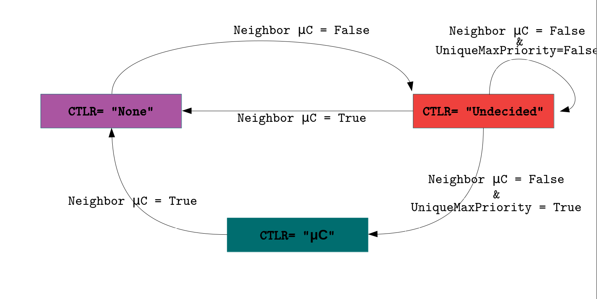

(Click on the images* to enlarge)
Topology Management Module |
State Discovery Module |
μC Placement Module |
|---|---|---|
|
An Aloe node can be in 3 states.
This module uses REST API to identify the states of the neighbour nodes. |
Based on the neighbor states collected, every node independently determines whether it needs to launch a µC service or not. |
μC Manager Module |
PushToNode Module |
Resource Management Module |
|
Due to change in topology the µC arrangements may require changes. This module is responsible for consistancy management and migration of µCs through a lightweight migration technique. |
Along with fault-tolerance, Aloe supports rapid deployment and runtime customization of the system. It provides an interface for monitoring and changing the policy level information for the µC at runtime. |
In-network processing hosts µC and IoT workloads using the same infrastructure. This module ensures the QoS requirements for µC by resrving resources for the control plane applications. |
|
|
||
(Click on the images* to enlarge)
| Aloe relies on a self-stabilizing maximal indipendent set (SS-MIS) algorithm for μC placements. It ensures that the distributed SS-MIS converges in linear time. Once the SS-MIS converges, the independent set is labeled as the set of μCs. |  |